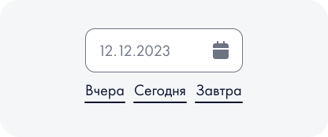
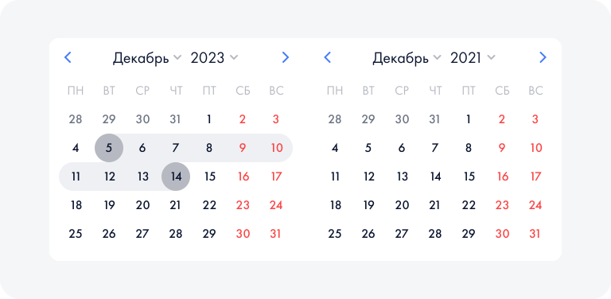
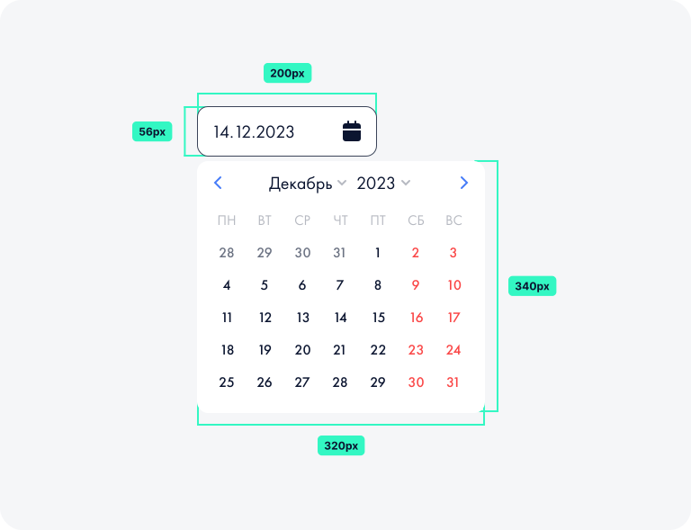

DatePicker
Когда использовать
Используйте поле с датой, когда нужно ввести дату в формате ДД.ММ.ГГГГ.
Описание работы
Поле с датой отличается от обычного поля ввода наличием иконки, маски и блока календаря. Календарь и маска появляются всегда, когда поле получает фокус. Для выбора месяца и года можно воспользоваться выпадающими списками.
Если можно предположить, какое значение введет пользователь, предложите быстрый ввод соответствующих дат:

Для выбора периода надо выделить две даты:

Валидация
Если пользователь указал некорректную дату с помощью клавиатуры, при потере фокуса поле валидируется и подсвечивается красным:

Анатомия элемента
Ниже представлен увеличенный элемент и его ключевые размеры исходя из модульной сетки дизайн-системы MEILE.
